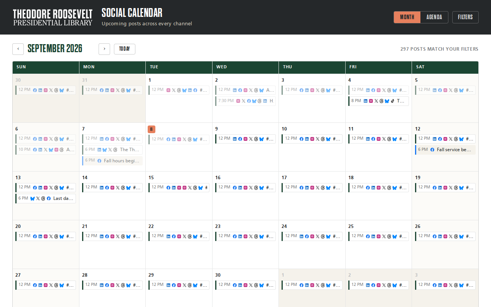

Try it right here
This loads the live project from its own domain, exactly as a visitor would see it.
What it does
Pulls scheduled social messages from the Hootsuite API twice a day, writes a JSON snapshot plus downsized preview images, and publishes a dependency-free static site. One story going to six channels renders as a single row with per-network icons, not six near-identical duplicates.
A second page rebuilds a link-in-bio archive by following shortlinks to their real destinations and reading each page's own headline, so the archive outlives the calendar's two-week window.
One caution before you deploy it publicly: the published site exposes copy that has not gone out yet. Put access control in front of the hostname if that matters to your organization.
What it can do
- Month grid and forward-running agenda views over the same snapshot
- Per-network previews that mimic how copy will actually look once posted
- Filter by channel, tag, and status; full-text search of post copy
- Link-in-bio page with a merging archive
- Timed reveal so scheduled posts appear on time without waiting for a rebuild
- OAuth refresh-token rotation written back to a repository secret automatically
Make it your own
Start by forking the repository into your own organization. Everything below assumes you are working in your fork, not this one.
- Fork, replace
CNAME, set Settings → Pages → Source to GitHub Actions, and add the DNS record. - Follow
SETUP.md: register a developer app with your scheduling platform and add the three required repository secrets. About ten minutes, once. - Run
scripts/bootstrap_auth.pyonce locally to complete the OAuth handshake and seed the refresh token. - Point the brand tokens at your own colors and fonts.
- Adjust the cron in
.github/workflows/refresh.ymlif twice daily is not your cadence, then trigger it once with a backfill to seed the links archive. - Decide whether the site should be public. It shows unsent copy.
Stuck on a step? Open an issue on the repository. Questions from people adapting these for their own institution are the most useful feedback we get.